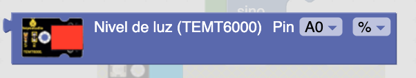
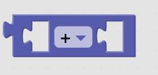
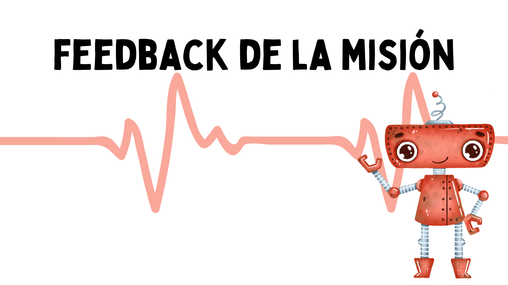

El objetivo de esta misión consiste en recrear el sistema de encendido y apagado de las farolas. Seguro que te has preguntado alguna vez quién enciende las farolas de toda tu ciudad cuando se hace de noche. Pues seguramente nadie, seguramente se enciendan solas gracias a sistemas de control programados como el que vamos a hacer a continuación. Para ello necesitamos un LED y el sensor de luz ambiental TEMT6000. Conéctalos a la
placa Easy Plug de la siguiente manera, el sensor de luz en el PIN A0 y el LED en el PIN D5.
Conexionado del sensor de luz (A0) y LED D5.
Para esta actividad deberíamos usar la lectura de la consola serie para ve sus valores y cambiar la intensidad de luz que incide sobre la LDR, para tomar un valor de referencia. En los sensores analógicos, ArduinoBlocks da la posibilidad de hacer dos tipos de lecturas; o bien del 0 al 100% o en valor numérico de 0 a 1023.
En esta ocasión la lectura de los valores la vamos a realizar en %. Tomaremos un valor por debajo del 20% y la usaremos para realizar la misión propuesta.

Sensor Temp6000
Necesitaremos crear una variable para los valores de NivelLUZ. Una variable es un «cajón» al que ponemos un nombre. En este "cajón" vamos a guardar los valores de luz que pueden cambiar con el tiempo. Este cajón puede ser un número, un carácter, una cadena, varios números, etcétera.
Utilizaremos los bloques de "lógica" para introducir una condición en la cual “si algo es menor que” realiza una acción. Este nuevo bloque de igual, diferente, menor, mayor, menor o igual.

Para dar el valor de 20 necesitamos el bloque numérico que se encuentra dentro del menú matemáticas.

- Entorno de programación por bloques ArduinoBlocks
- Uso de variables.
- Bloques matemáticos.
- Lógica: condicionales y comparaciones.
 |
